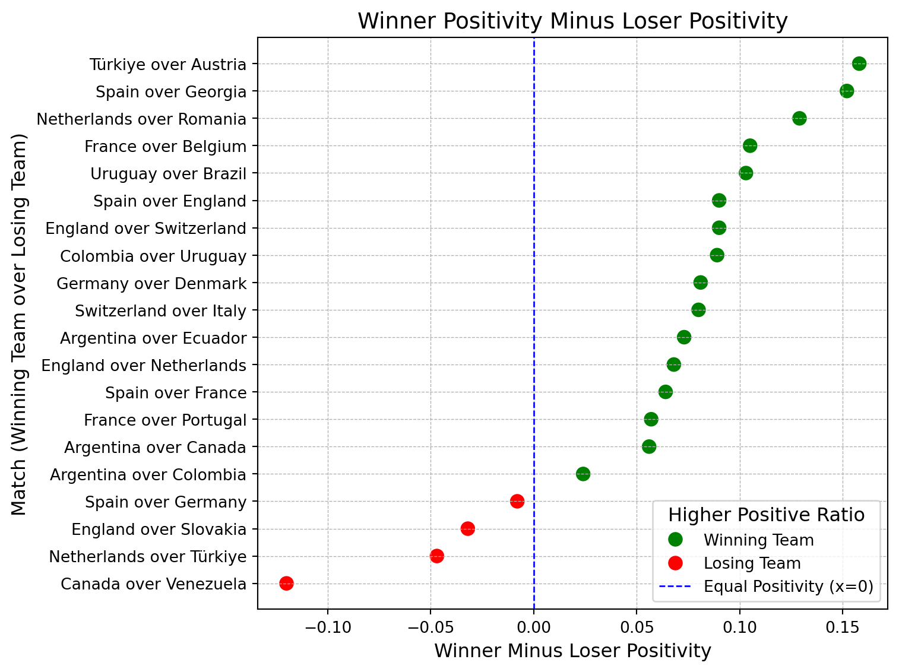
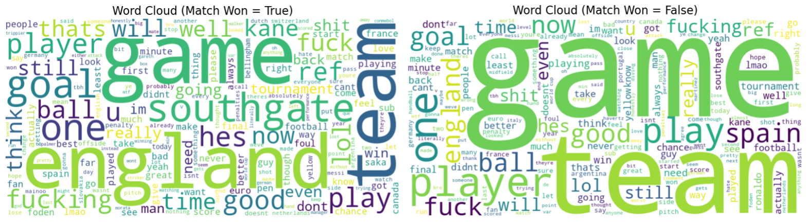
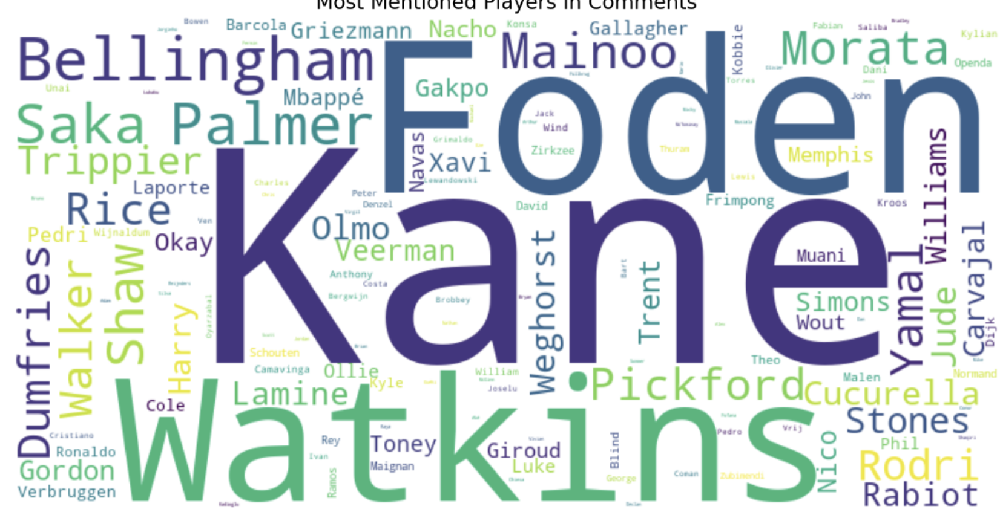
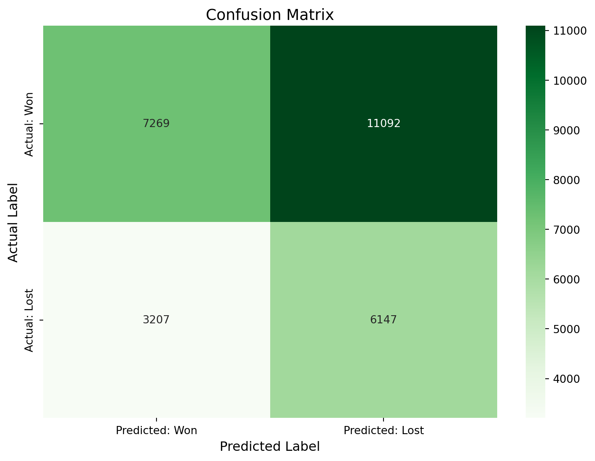
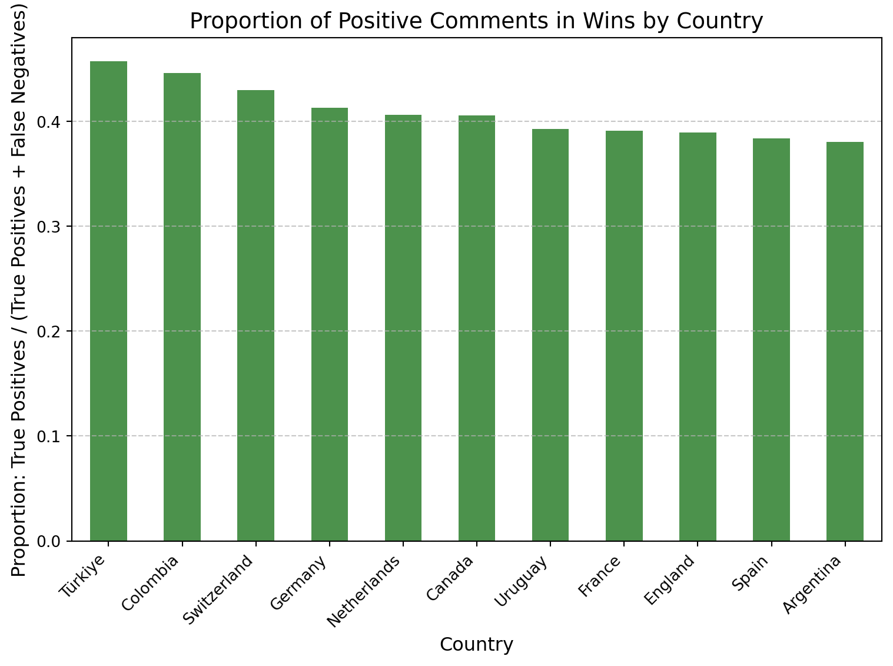
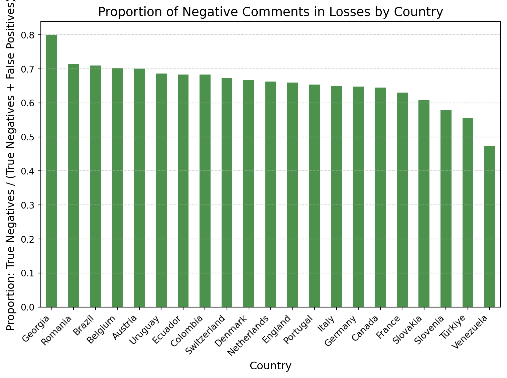
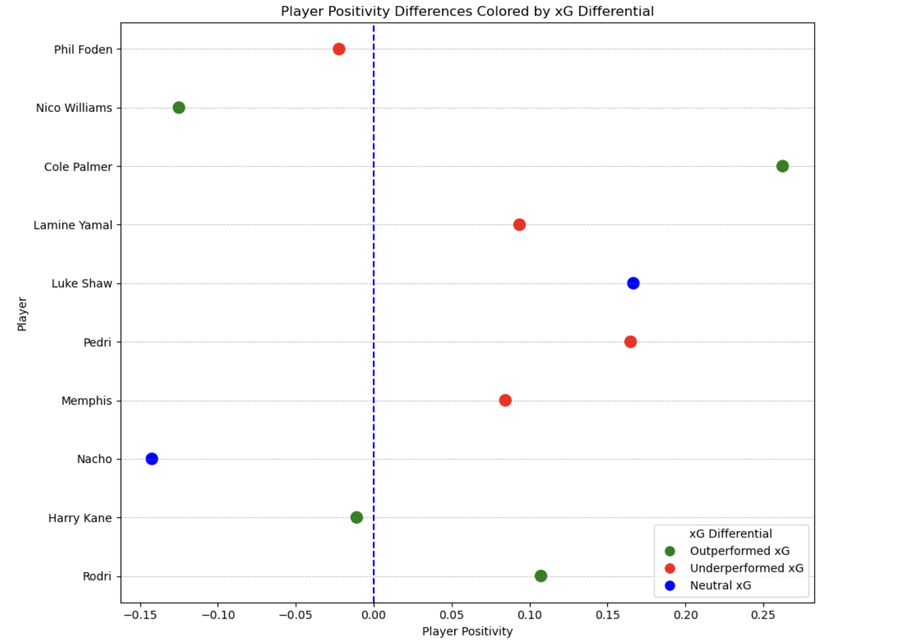
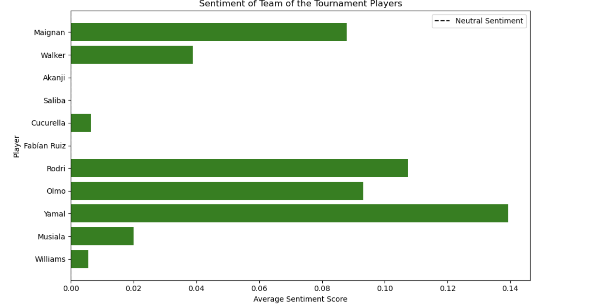

Natural Language Processing
1 Executive Summary
In this project, we applied Natural Language Processing (NLP) techniques to conduct sentiment analysis on the Reddit data including comments on 2024 UEFA Euro and Copa América. Our primary accomplishments include proving a correlation between comment sentiment and real-world performance, as well as showing how the events of a match can impact predictiveness. These results are significant because we can conclude that there is value in analyzing text for outcome prediction, while also highlighting the need for more granular analysis to see if we can extract the context surrounding a comment. These insights directly support our goal of linking our Reddit data to match and players metrics.
2 Analysis Report
2.1 Introduction
To discover connections between Reddit data and real metrics, we used John Snow Labs to extract and analyze sentiment and emotion from the soccer subreddit. Data was filtered to specifically capture self-assigned user flairs and determine when fans were commenting during their teams’ matches. Our analysis focused specifically on the national teams that advanced to the knockout rounds of major international tournaments, providing a meaningful context to study fan reactions during high-stakes matches.
Our primary goal was to analyze user-generated content in the most prominent soccer-related subreddit to classify sentiment as positive or negative and evaluate whether users were rooting for winning or losing teams. Using advanced Natural Language Processing (NLP) techniques, we quantified sentiment by generating positivity scores and identified patterns in fan behavior across different nations and competitions. We also used NLP techniques to assess differences in player sentiment vs performance, using xG differential as a proxy for performance. This is not the perfect metric for performance, but since we were not able to find a dataset containing match ratings during the Euro Tournament, this was substituted as a performance metric.
By analyzing comments, we explored the emotional nuances of fan reactions to match results, player performances, and tournament outcomes. This data-driven approach allowed us to assess how fan sentiment aligns with actual performance metrics. This revealed interesting trends such as:
- Higher positivity scores in national subreddits following a team’s victory
- Peaks in engagement during critical tournament phases, such as semi-finals and finals
- Variability in NLP performance based on the results of a match
- Sentiment regarding players did not seem to match up with their performance in terms of xG differential
This analysis provides a unique lens to understand the interplay between online fan behavior and real-world events, helping to uncover connections between digital expressions and national pride.
2.2 Data Exploration
Due to the highly unpredictable nature of Reddit comments, preprocessing is a vital step for obtaining meaningful results from Natural Language Processing. The first step of this entailed setting all letters to lower case so that capitalized words are not considered distinct from their lowercase counterparts. We then used a regular expression to remove all unusual characters such as numbers, punctuation, and emojis. Additionally, superfluous whitespace was removed and words were split and re-joined. Finally, all stopwords were removed to eliminate consideration of words that do not contribute to the meaning of a comment.
After executing these tasks, we can explore the data and identify discrepancies between comments from commenter’s whose team won and those whose team lost. The wordclouds below provide a sample of the most common words from each category. There aren’t many surprises from this visualization. The usual suspects of soccer-related terms, player and country names, and vulgarity are all present in both wordclouds. At first glance, there isn’t much to detect that would suggest that winning fans behave too differently from their counterparts. Thus, NLP tasks will attempt to find what the human eye cannot.
We also generated a word cloud looking at which players were mentioned the most during this portion of the tournament. No surprise, the players who were most mentioned during this portion of the Euros were spanish and english players, and since these teams ended up in the final, this makes sense.


2.3 Analytical Approach
The NLP methodology of choice is a pre-trained sentiment analysis model in PySpark called sentimentdl_use_twitter. This will produce a binary output of positive or negative to portray the sentiment of each comment. These results will then be used to try to predict wins and losses, where we will hypothesize that positive-sentiment comments correlate with the commenter’s team winning.
2.4 Results and Visualizations
After attaching a sentiment to each comment, positivity ratios were then calculated based on groupings from other columns. The first question to explore was whether positive sentiment correlates with a team winning. The figure below shows the difference in positivity ratios for the winners and losers of each match, essentially telling us whether or not fans of the winning team were more positive than their opponents. As such, matches in which that is the case are colored green while matches that tell the opposite story are colored red.
The results are quite telling, as all but four matchups confirm our hypothesis. One bit of context to add to the others is that all four matches in which losing team commenters were more positive were matches decided late. Spain beat Germany in extra time, England beat Slovakia in extra time, the Netherlands overcame a 1-0 deficit in the final 20 minutes to beat Türkiye, and Canada beat Venezuela in penalty kicks. In these cases, comments during the match will come from users entirely unaware of the ending, which explains this uncertainty.
If we consider the hypothesis that positive comments correlate to winning, the below confusion matrix shows the accuracy of that hypothesis. An impotant value to note is the upper-right false negative value. This is greatest for two reasons: as mentioned in EDA there are more commenters from winning sides than losing sides, and that over 62% of comments are marked negative. This data imbalance is what leads to the modal value being off of the main diagonal.

The next two figures show the performance of sentiment analysis in predicting wins and losses by country. Since it is expected that winning teams will have more positive fans, these are split to either only contain matches in which the commenter’s team won, and those in which they lost. As expected due to the single-elimination format, there are more unique teams that lost than won. Also as expected, the prediction is much better at labeling losing comments as negative than winning comments as positive.
Nonetheless, the plots portray an especially interesting phenomenon with the winning matches, where the bottom three true positive rates come are commenters rooting for England, Spain, and Argentina. These were three of the four finalists in the two tournaments, indicating that sustained success does not necessarily lead to increased positivity. One possible explanation for this is all three teams entered their tournaments with high expectations, making their success less notable for their fans to talk positively about.



We also looked at player sentiment vs xG differential, as a proxy for determining how player performance differed from performance. This graph highlights the relationship between player positivity (derived from sentiment analysis) and their xG (expected goals) differential, revealing intriguing insights into the alignment between public perception and actual performance. Players like Harry Kane received positive sentiment while also outperforming their xG, reflecting well-aligned perception and exceptional efficiency in front of goal. Conversely, Phil Foden and Lamine Yamal enjoy positive sentiment but underperformed their xG, suggesting a mismatch between their actual contributions and public perception, potentially driven by reputation or other non-performance factors. On the other hand, Nacho, who has neutral xG performance, experiences negative sentiment, perhaps indicating broader dissatisfaction unrelated to scoring output. This makes sense because he is primarily a defender, so he was being judged on factors other than his xG. This visualization effectively juxtaposes sentiment with performance, offering a nuanced understanding of how players are perceived versus how they deliver on the field.

This bar chart analyzes the sentiment scores of players named to the “Team of the Tournament,” showing the average sentiment score for each player based on public commentary or feedback. Positive sentiment dominates, as reflected by the uniformly green bars, indicating that these players have been widely appreciated for their performances.Lamine Yamal stands out with the highest sentiment score, suggesting that his contributions to the tournament resonated most positively with fans or analysts. Similarly, players like Rodri and Dani Olmo received strong positive sentiment, reflecting widespread recognition of their impactful performances. In contrast, players such as Cucurella and Musiala have relatively lower sentiment scores, which could indicate a less pronounced impact or mixed public perception despite being named to the team. The dashed line labeled “Neutral Sentiment” serves as a benchmark, and it is evident that all players received above-neutral sentiment. This reinforces the idea that being selected to the team of the tournament aligns with receiving positive recognition from the public. The consistent positivity across the board suggests that the selections resonated well with popular opinion, highlighting the quality and influence of these players during the competition.
2.5 Conclusion
Ultimately, the main takeaway from this analysis is that sentiment analysis is a capable NLP tool at indicating the success of a team, although with a few caveats. These processes performed worse where matches were decided later on, and there is an imbalance in positive/negative assignment that contradicts the data imbalance where winning commenters are more active. For machine learning, we will add additional information to the data to consider the status of a match at the time of each comment as a way to mitigate these issues. Presumably, a commenter will react positively to good moments in a match, even if their team ultimately loses. Additionally, our data fails to consider reactions outside of the window during and immediately after a match, as well as comments from fans who have not self-identified using Reddit’s user flair. We can also see that overall, the players of the tournament in the Euros were all well received, and that player performance in terms of xG differential did not go hand in hand with the sentiments of these players
3 NLP Code Repository
Explore the code for our Natural Language Processing here.